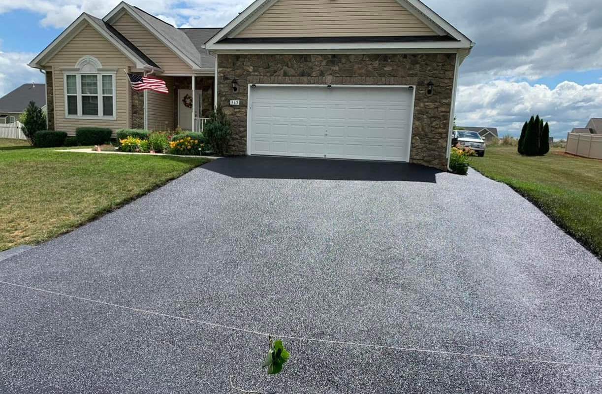

Driveway Paving

A driveway in the Eastern Panhandle has to survive clay that stays wet, hills that shed water in a rush, and winters that freeze that water inside any crack. A+ Paving & Landscaping builds and rebuilds residential driveways from our home base in Gerrardstown, including asphalt, tar and chip, overlays, and extensions.
Start with the ground, not the blacktop
The surface is the last step. On clay-rich ground over the limestone and shale of Berkeley, Jefferson, and Morgan counties, a thin skin of asphalt on soft soil moves with every freeze. Water sits in the clay, expands when it freezes, and opens a crack that was invisible in October. The useful order of work is to shape the driveway so water leaves it, compact a stone base, and only then place hot-mix asphalt or a tar and chip surface.
Where the old pavement is too broken to cover, it comes out. An overlay is a fit when the shape is still sound and the base is not pumping mud. A brand-new run, or a side-yard extension, needs room for the base and a slope that does not send water at the garage, a neighbor's yard, or the public road.
Asphalt or tar and chip
Hot-mix asphalt is the smooth surface most homeowners ask for, and it is the one we sealcoat later to keep water out. Tar and chip is the rougher, more rural look already used on longer lanes around Inwood, Gerrardstown, and Berkeley Springs. The choice is about the length of the drive, the slope, and how you want it to look. Our asphalt versus tar and chip comparison walks through that difference. Price factors for a new asphalt driveway are already written up in the paving cost guide. This page does not add a separate price list.
The apron is a different question from the driveway
The apron is the short section that meets the public street. Widening it, paving through a ditch, or tying into a curb is not the same job as paving the private drive. Before that work starts, check with Berkeley County, Jefferson County, or Morgan County, with the town if you are inside one, and with your HOA. Rules differ by road, and this is general guidance, not a permit approval or a fee schedule.
After the drive is down, winter protection is crack repair and sealcoating in a warm, dry stretch, not a new claim about a specific calendar day. Commercial work is a different page: parking lots. Beds, patios, and walks that meet the new pavement are on the landscaping page. Photos of finished drives are in the gallery.
Tell us the town and what the driveway does today, whether that is a short city apron in Martinsburg, a longer lane in Inwood, or a hillside cut in Berkeley Springs. Request an estimate and we will look at the base, the drainage, and the apron before anyone talks about a surface.